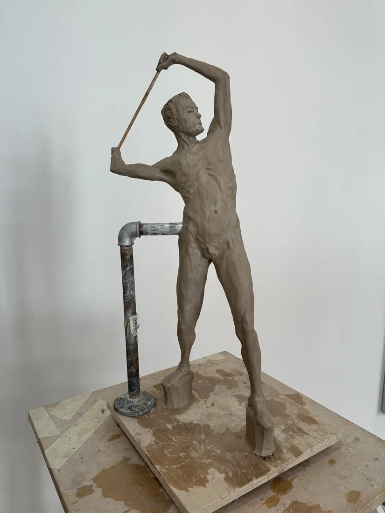

A study in clay
A figure studied through weight, gesture and balance. These studio photographs record a work in progress and the physical process of building a form.
Original photographs from the studio. The support structure remains visible as part of the working process.

01 / 16
Drag horizontally to move through 16 studio photographs.